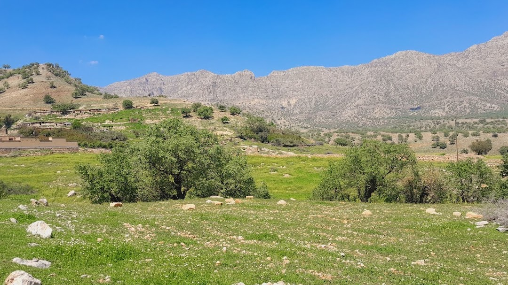
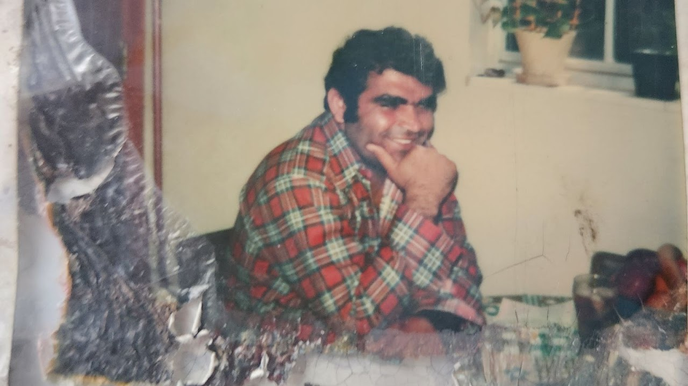

A Tapestry of Strength and Resilience

In the small town of Masjed Soleyman, Iran, on May 22, 1952, a child was born who would grow up to embody the very ideals of perseverance, ingenuity, and love.
Eghbal Jalali entered a world that would challenge him early, yet instead of breaking him, these experiences only steeled his resolve and formed the bedrock of his character. By the time he was 15, both his parents had passed away, thrusting him and his brothers, including Hossein Jalali, into a life of premature responsibility and hardship.
In a society where family forms the cornerstone of emotional and financial stability, losing both parents could have been a disastrous setback. Yet Eghbal and his brothers found strength in unity, caring for one another as they navigated the complexities of adolescence without parental guidance. These were formative years that tested his resolve but also shaped his undying commitment to family and community. The young man who emerged from this crucible of adversity was resolute, caring, and above all, hopeful about the potential for positive change.

Eghbal's childhood trials laid the foundation for the life philosophy he would come to espouse: that challenges are opportunities for growth, that hard work can surmount almost any obstacle, and that a commitment to ethical conduct and generosity toward others can help one achieve not only personal success but a legacy that enriches entire communities. This unwavering belief in the power of resilience and hard work would serve as a compass throughout his life, steering him through the myriad challenges and triumphs that awaited him.